Estimation of a spectral density function¶
 be a multivariate
stationary normal process of dimension
be a multivariate
stationary normal process of dimension  . We only treat here
the case where the domain is of dimension 1:
. We only treat here
the case where the domain is of dimension 1:  (
( ).
). . In the discrete
case,
. In the discrete
case,  is a lattice.
is a lattice. is supposed to be a second order process with zero mean and
we suppose that its spectral density function
is supposed to be a second order process with zero mean and
we suppose that its spectral density function
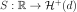
defined in (8) exists. is the set of
-dimensional positive definite hermitian matrices.
is the set of
-dimensional positive definite hermitian matrices. from data, which can be a sample of time series or
one time series.
from data, which can be a sample of time series or
one time series.Depending on the available data, we proceed differently:
if the data correspond to several independent realizations of the process, a statistical estimate is performed using statistical average of a realization-based estimator;
if the data correspond to one realization of the process at different time stamps (stored in a TimeSeries object), the process being observed during a long period of time, an ergodic estimate is performed using a time average of an ergodic-based estimator.
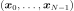
associated to the time grid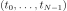
which is a discretization of the domain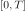
. defined on
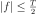
. segments of length
segments of length  , possibly overlapping (size of
overlap
, possibly overlapping (size of
overlap  ).
). be the first such
segment. Then:
be the first such
segment. Then:
Applying the same decomposition,
and finally:


The objective is to get a statistical estimator from these
segments. We define the periodogram associated with the segment
 by:
by:
![\begin{aligned}
\vect{X}_{k}(f_p,T)&=&\Delta t\sum_{n=0}^{L-1}\vect{x}(n\Delta t)\exp\left[\frac{-j2\pi pn}{N}\right], \quad p=0,\dots, L-1\\
\hat{G}_{\vect{x}}(f_p,T)&=&\frac{2}{T}\vect{X}_{k}(f_p,T)\,{\vect{X}_{k}(f_p,T)^*}^t,\quad p=0,\dots,L/2-1\end{aligned}](../../_images/math/291006e37cea4a9984ca514421a21ac75537bf4d.svg)
with  and
and
 .
.
Bias
![=\mathbb{E}[\hat{G}_{\vect{x}}(f_p, T)-G_{\vect{X}}(f_p)]=(\frac{1}{T}W_B(f_p, T)-\delta_0)*G_{\vect{X}}(f_p)](../../_images/math/39a9e4c7336ff1ff5e87439e9ad5481e5d69cd42.svg) where
where 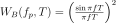
is the squared module of the Fourier transform of the function (Barlett window) defined by:
(Barlett window) defined by:
![w_B(t, T) = \mathbf{1}_{[0,T]}(t)](../../_images/math/291455211c2fac7bd04369a847a746d36df775d9.svg)
This estimator is biased but this bias vanishes when
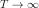
as .
.
Covariance
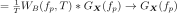
as , which means that the fluctuations of the periodogram are of the same order of magnitude as the quantity to be estimated and thus the estimator is not convergent.
The periodogram’s lack of convergence may be easily fixed if we consider
the averaged periodogram over independent time series or
segments:

The averaging process has no effect on the significant bias of the periodogram.
The use of a tapering window
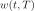
may significantly reduce it. The time series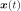
is replaced by a tapered time series in the computation of
in the computation of
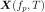
. One gets: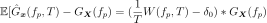
where  is the square module of the Fourier transform
of at the frequency
is the square module of the Fourier transform
of at the frequency
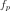
. A judicious choice of tapering function such as the Hanning window can
dramatically reduce the bias of the estimate:
can
dramatically reduce the bias of the estimate:
(1)¶![w_H(t, T) = \sqrt{\frac{8}{3}}\left(1-\cos^2\left(\frac{\pi t}{T}\right)\right)\mathbf{1}_{[0,T]}(t)](../../_images/math/20484fca25baa6d2df99eb615fc14b49b7de8e3d.svg)
The library builds an estimation of the spectrum on a TimeSeries by fixing the number of segments, the overlap size parameter and a FilteringWindows. The available ones are:
The Hamming window
![w(t, T) = \sqrt{\frac{1}{K}}\left(0.54-0.46\cos^2\left(\frac{2 \pi t}{T}\right)\right)\mathbf{1}_{[0,T]}(t)](../../_images/math/692c88c6832ef84ec9de6841550134e403d3ec68.svg)
with
= 
The Hanning window described in (1) which is supposed to be the most useful.
API:
See
HanningSee
HammingSee
WelchFactory
Examples: